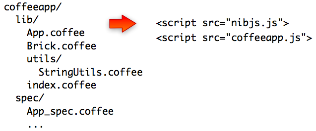

Why not writing source code in CoffeeScript instead?
CoffeeScript compiles to JavaScript but has a lot of friendly syntactic and semantic features, like string interpolation, destructuring assignment and everything is an expression.

So it makes sense to be able to maintain the sources in CoffeeScript instead of Javascript while keeping the packaging option!